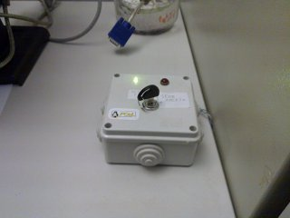
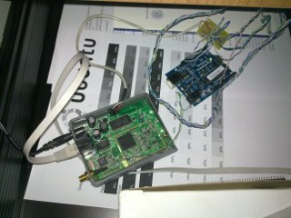

- Cos'è bits
-
BITS è un indicatore in tempo reale dello stato della sede del POuL. E' stato progettato per sapere se c'è qualcuno in sede senza dover andare a controllare di persona, consultando direttamente il proprio portatile o smartphone.
L'architettura di BITS è composta da un Arduino, una Fonera, e un web server.
 Il codice sorgente è scritto nei seguenti linguaggi:- Bash
- C++
- CSS
- HTML5
- Javascript
- PHP
- Python
- SQL
- Stato della sede
-
Questa è la funzione principale del sito BITS: informare in tempo reale se la sede è aperta o chiusa. Viene anche indicata la data e l'ora dell'ultima volta in cui la sede è stata aperta/chiusa.
Non è necessario ricaricare la pagina per avere un informazione aggiornata, tramite l'utilizzo di WebSocket la pagina si aggiorna da sola.
- Previsione presenze
-
La sede del POuL non ha orari prefissati, è aperta quando almeno uno dei suoi membri decide di farci un salto. Di solito questo avviene in corrispondenza delle ore buche tra una lezione e l'altra.
Poichè le ora buche sono uguali tutte le settimane all'interno di un semestre, al sito è stata aggiunta una previsione della presenza di persone in sede, basata sullo storico delle presenze nelle settimane passate.
Le previsioni sono rappresentate graficamente in una tabella che, per ogni ora e giorno della settimana, mostra la probabilità che la sede sia aperta tramite un colore (rosso=bassa probabilità, verde=alta probabilità).

- Temperatura in sede
- BITS è anche dotato di un sensore che registra la temperatura in sede.
- Storice presenze
- Le informazioni sulle presenze in sede sono salvate in un database, usato per la previsione delle presenze ma anche direttamente accessibile.